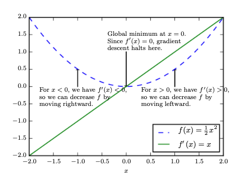
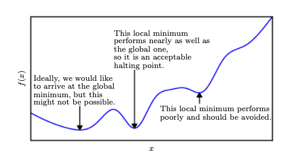
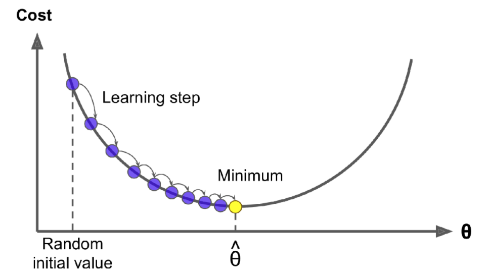

Stochastic Gradient Descent#
In this chapter we close the circle that will allow us to train a model - we need an algorithm that will help us search efficiently in the weight space to find the optimal set \(w*\) and be able to handle the some times massive amounts of data that we have.
Gradient Descent#
Obviously for us to be able to find the right weights we need to pose the learning problem via a suitable objective (loss) function such as the cross-entropy. Optimization refers to the task of either minimizing or maximizing some function \(L(\mathbf w)\) by altering \(\mathbf w\). We usually phrase most optimization problems in terms of minimizing \(L(\mathbf w)\). Maximization may be accomplished via a minimization algorithm by minimizing \(−L\). Mathematically
As the simplest possible example the following figure show the simplest possible objective function and what an optimization algorithm is doing.
 Gradient descent. An illustration of how the gradient descent algorithm uses the derivatives of a function to follow the function downhill to a minimum
The global minimum of such nicely convex function can be obtained by solving the following equation for \(w\):
where \(L'(w)\) is the derivative of \(L\) with respect to \(w\). In most practical cases we wont be able to find such solution easily and therefore we work as follows: We know that the derivative \(L'(w)\) gives the slope of \(L(w)\) at the point \(w\). In other words, it specifies how to scale a small change in the \(w\) space to obtain the corresponding change in the output:
The derivative is therefore useful for minimizing a function because it tells us how to change \(w\) in order to make a small changes in \(L(w\)). We can thus reduce \(L(w)\) by moving \(w\) in small steps with the opposite sign of the derivative.This technique is called gradient descent (Cauchy, 1847)
 Local minima in optimizing over complex loss functions
We often minimize loss functions that have multiple inputs: \(L: \mathbb R^n→ \mathbb R\). For functions with multiple inputs, we must make use of the concept of partial derivatives. The partial derivative \(\frac{\partial L}{\partial \mathbf w_i}\) measures how \(L\) changes as only the variable \(\mathbf w_i\) increases at point \(\mathbf w\). The gradient generalizes the notion of derivative to the case where the derivative is with respect to a vector: the gradient of \(L\) is the vector containing all the partial derivatives, denoted
Element \(i\) of the gradient is the partial derivative \(\frac{\partial L}{\partial \mathbf w_i}\).
In the generic case:
where \(\eta\) is the scalar learning rate that is a hyperparameter that needs to be optimized (searched over).
 Iterations in gradient descent towards the global in this case min
Here is an animation on how it works in a more complicated loss function:

Stochastic Gradient Descent (SGD)#
To calculate the new \(\mathbf w\) each iteration we need to calculate the \(\frac{\partial L}{\partial \mathbf w_i}\) across the training dataset for the potentially many parameters of the problem. As we will see in deep learning problems that SGD-type optimization algorithms are de-facto used, we may be dealing with 100 million parameters and many more examples. As a toy example, lets assume that we have a Gaussian distributed error in our regression model i.e. the Cross Entropy (CE) is the MSE loss function
Its partial derivative is
which necessitates going over the whole dataset at each iteration. This would be extremely slow and instead we perform an approximation to the gradient descent involving two steps:
We define a mini-batch over which we estimate the gradient. When the mini-batch size is 1, we implement the Stochastic Gradient Descent algorithm. Note in practice people may refer to SGD but may mean mini-batch.
We define a schedule of learning rates instead of sticking to only one value.
The main advantage of Mini-batch GD over Stochastic GD is that you can get a performance boost from hardware optimization of matrix operations, especially when using GPUs.
Digging further#
For an overview of optimization theory please go through Ian Goodfellow’s chapter 4 below. Stochastic gradient descent is treated also in section 5.9 of this free book. For an overview of the various algorithms appart from SGD see this blog post.